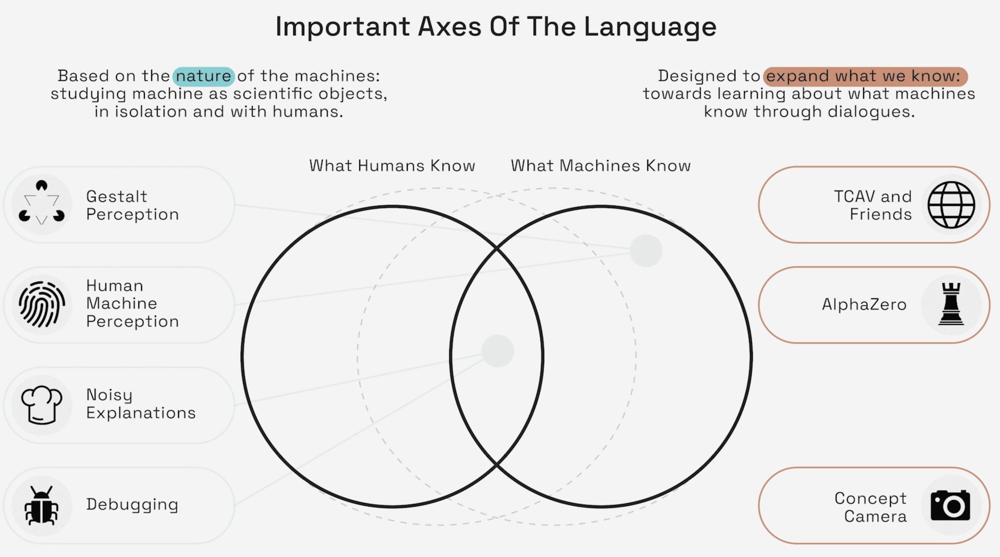

21. Linear Probes and Concepts
motivating application
linear probes
training concept vectors
probes vs. concepts
Learning Outcomes
- Describe the theoretical foundation of post-hoc explanation methods like SHAP and linear probes values and apply them to realistic case studies with appropriate validation checks
- Analyze large-scale foundation models using methods like sparse autoencoders and describe their relevance to problems of model control and AI-driven design.
- Within a specific application context, evaluate the trade-offs associated with competing interpretable machine learning techniques.
Readings
Alain, G., & Bengio, Y. (2017). Understanding intermediate layers using linear classifier probes. OpenReview. https://openreview.net/forum?id=ryF7rTqgl
Schmalwasser, L., Penzel, N., Denzler, J., & Niebling, J. (2025). FastCAV: Efficient computation of concept activation vectors for explaining deep neural networks. In Proceedings of the 42nd International Conference on Machine Learning. https://openreview.net/forum?id=kRmfzTfIGe
Motivating Case Study
Predict livability from aerial imagery.
- Can we trust what the model learns?
- Will it generalize?
Statistical Formulation
Data. 51,781 grid cells (100m²) in Netherlands. Each has livability score \(y \in \mathbf{R}\) and 500×500px aerial image \(x\).
Supplemental. FLAIR land use labels from French National Institute.
Goal. Which visual concepts does \(f(x;\theta)\) use to predict \(y\)?
Concept labels \(c \in \{1,\ldots,K\}\) from auxiliary dataset.

Linear Probes
Notation
\(h_l(x)\) — activation vector at layer \(l\)
\(p_l(h) = \text{softmax}(W_l h + b_l)\) — linear classifier predicting \(y\) from \(h_l\)
Diode constraint. \(\frac{\partial \mathcal{L}}{\partial \theta} = 0\) (probe training doesn’t affect base model)
Estimation
Minimize empirical risk on hidden representations: \[\min_{W_l, b_l} \sum_{i=1}^N \mathcal{L}(p_l(h_l(x_i)), y_i)\]
Validation. Test on held-out data to ensure genuine learned features, not memorization.
Information vs. Accessibility. Total mutual information \(I(X; h_l)\) may decrease with depth (Data Processing Inequality), but linear accessibility of task-relevant information typically increases.
Cartoon

Early layers: generic features (edges). Deep layers: task-specific, linearly separable.
Outputs
- Layer-wise error \(\to\) where model “solves” task
- Training dynamics \(\to\) epochs until layer becomes useful
- Representational capacity \(\to\) signal preserved at each bottleneck
Example: Skip Connections
Bug detection via probes. Skip connection from layer 1→64 rendered layers 2–63 “dead” (flat error rates).

Exercise: Linear Probe Pseudocode
Write the pseudocode to extract activations and train a probe for a single layer.
Concept Activation Vectors
Notation
CAV. \(v_c^l \in \mathbf{R}^{d_l}\) — direction of concept \(c\) in layer \(l\)
Concept Sensitivity. Directional derivative of class \(k\) logit along concept vector: \[S_{c,k}(x) = \nabla_{h} f_k(h_l(x)) \cdot v_c^l\]
TCAV Score. \(T_{c,k} = \frac{|\{x \in X_k : S_{c,k}(x) > 0\}|}{|X_k|}\)
Fraction of class-\(k\) images where concept \(c\) increases model confidence.
Step 1. Define concept images \(x_n \in D_c\) (positive set). Construct control pool \(x_n' \in N\) (negative set, random images).

Concept: “stripes”
Step 2. Find direction \(v_c^l\) that best separates \(h_l(D_c)\) from \(h_l(N)\) in activation space.
Standard. Train linear SVM. CAV is the normal vector to decision boundary.

Step 3. Compute sensitivity of model’s prediction to this direction.
\[\text{Sensitivity} = \text{Model Gradient} \cdot \text{Concept Direction}\]
Global explanation: “To what extent does concept ‘stripes’ contribute to the model’s definition of ‘zebra’?”

\(\nabla y_k(h(x))\) is the steepest ascent direction for class \(k\)’s logit.
Alternative Step 2: FastCAV
\(v_{\text{FastCAV}} = \frac{\bar{h}_c - \bar{h}_r}{\|\bar{h}_c - \bar{h}_r\|}\)
Equivalent to SVM under isotropic covariance (\(\Sigma = \sigma^2 I\)).
Leads to 46.4× average speedup.
Testing for Significance
- Generate CAVs from multiple random negative sets
- Build null distribution of TCAV scores
- Two-sided t-test: is actual concept significant vs. random baseline?
More details in next lecture.
Probes vs. Concepts
Similarities
- Post-hoc (frozen model)
- Linear accessibility assumption
- Activation-based (\(h_l(x)\))
Differences
Probes-specific
- Align using model’s task labels (\(y\))
- Final output is probe accuracy
- Goal is to measure the available task-specific information
Concepts-specific
- Align using human semantics (\(c\))
- Final output is TCAV sensitivity score
- Goal is to model reasoning with human-understandable features